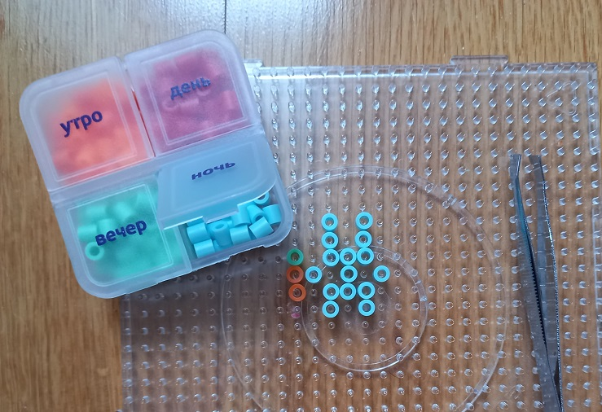
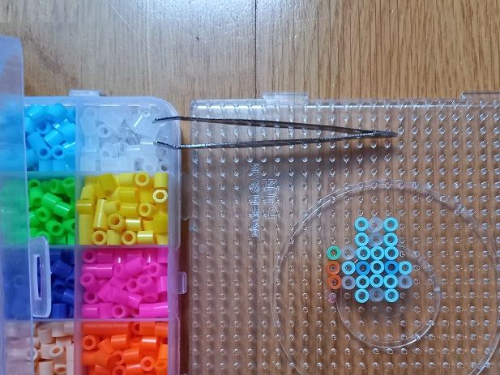
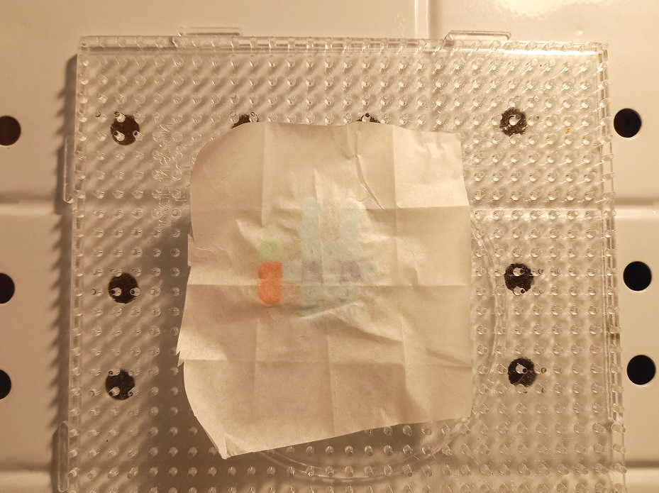
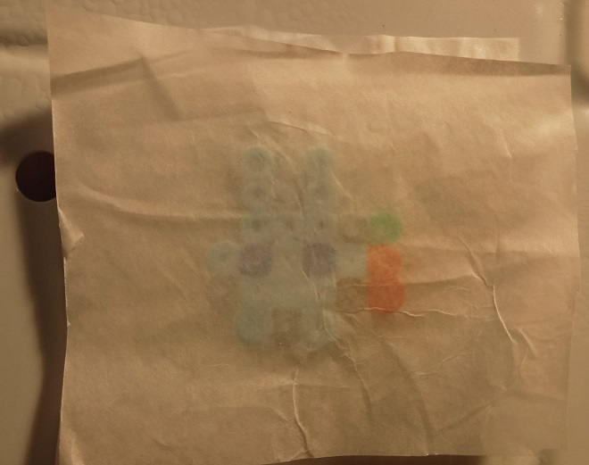
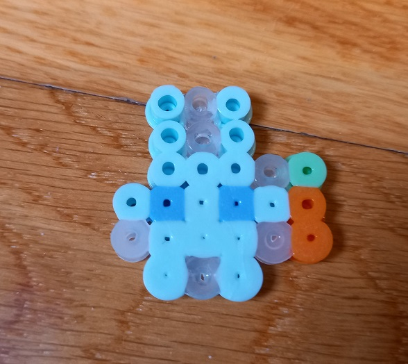

|
|
ТермоАрт⠀⠀ |
|---|
Шаг 1. СортировкаДля начала, разложите несортированне бусины по ячейкам таблетницы. Удобно открывать только 1 ячейку с нужным цветом, так как не надо искать нужный цвет, а также придётся собирать меньше бусин, если Вы их уроните.
Бусины рассортированы в таблетнице Шаг 2. СборкаНачните поэтапно выкладывать вашу фигуру с помощью пинцета. Не забывайте применять фантазию! Не всегда из повторения готовой схемы один-в-один получается хороший результат, так как зачастую в оригинале есть цвета, которых у Вас в наборе нет.Экспериментируйте с оттенками, расположением теней, только так у Вас получится красивая и уникальная поделка!Сборка схемы "Микро Крош" в процессе Шаг 3. Добавление прозрачных бусинДобавьте прозрачные бусины в тонких местах: "ямках" и "хвостиках" толщиной в одну бусину. Здесь: "ямка" - пространство между ушами, "хвостик" - лапка. Эти обозначения условны, главное - сделать периметр фигуры более ровным, минимально изменяя внещний вид схемы.Этот этап можно пропустить, но я рекомендую его выполнять, особенно если поделка будет использоваться как брелок.Добавили прозрачные бусины Шаг 4. ПлавкаСамый опасный этап создания - сплавка бусин с помощью утюга. После него нельзя будет вернуться назад и что-то изменить.Разогрейте утюг до полной мощности, накройте поделку калькой, держите утюг максимально параллельно поделке 10-15 секунд.Плавим бусины утюгом Дайте бусинам остынуть до комнатной температуры. Снимите их с основы.Переверните фигурку и накройте её ещё одним листом кальки со второй стороны. Прогладьте.Плавим вторую сторону Готово!Ваша поделка готова! Можете сделать из неё брелок, брошь, фигурку или использовать просто как игрушку.При создании этой фигурки утюг не был параллелен основе, поэтому бусины расплавились неравномерно. Не допускайте чужих ошибок, учитесь на своих, не забывайте творить и получать удовольствие от процесса!Если эта схема для Вас слишком простая, посмотрите другие схемы на этом сайте.Итог |
|---|
⠀